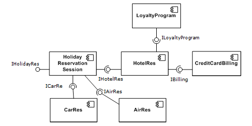

Component design
Getting cohesion and coupling right
Created by
Jeroen De Dauw
for Wikimedia Deutschland
Licensed CC BY-SA 3.0
What are components?
They are kinda like boxes

Except that they do stuff

What are components?
Benefits of components
Separation of concerns
Reusability
Encapsulation
Substitutability
Independently deployable
Independently developable
Divide and conquer
Designing components
Which classes should go together in a component?
→ Principles of package cohesion
How should components relate to each other?
→ Principles of package coupling
How big should a component be?
Coupling: Acyclic dependencies principle
Directed acyclic graph


Coupling: Stable-dependencies principle
Depend in the direction of stability
Coupling: Stable-abstractions principle
A package should be as abstract as it is stable


Cohesion: Reuse-release equivalence principle
In order to be reused, a component must be released
Granule of release is granule of reuse
Either all reusable or not reusable
Cohesion: Common-closure principle
Classes that change for the same reason should be in the same component
SRP extended to components
Changes should not span packages, and affect everything in the package
Cohesion: Common-reuse principle
Classes that are used together should be in the same component
If you use one class from a package, you depend on them all
Like ISP
Things not covered
Interplay of the forces
Evolution of components
Components in a layered system

Recommended reading
- Continuous delivery, chapter 13 "managing Components and Dependencies"
- Clean Code, chapter 11 "Systems"
- Patterns of Enterprise Application Architecture, chapter 1 "Layering"
- Clean Code component design videos